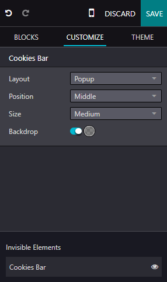

Barra de cookies¶
Las cookies son pequeños archivos de texto que se envían a su dispositivo cada vez que visita un sitio web. El navegador las procesa y almacena ya que contienen información acerca de su visita, tal como datos de inicio de sesión, ubicación, idioma, etc. Hay dos tipos principales de cookies:
Cookies esenciales, que son necesarias para que el sitio web funcione de forma correcta.
Cookies no esenciales u opcionales, que se utilizan para analizar su comportamiento o mostrarle publicidad.

Las leyes de protección de datos como el RGPD requieren notificar a los usuarios sobre la recopilación de datos, así como sus métodos y propósitos. Con frecuencia, las barras de cookies se utilizan para cumplir con esta obligación de manera amigable y transparente con el usuario. Se muestran de inmediato en la primera visita del usuario para informarle que el sitio web utiliza cookies y permitir que decida si desea almacenar cookies no esenciales en su dispositivo.
Configuración¶
Para habilitar la barra de cookies en su sitio web de Odoo, vaya a y habilite la barra de cookies en la sección de Privacidad.
Puede personalizar la apariencia de su barra de cookies y editar el contenido de la página relacionada con la política de cookies.
Personalización¶
Para adaptar la visualización de la barra de cookies, haga clic en Editar y seleccione el bloque de creación Barra de cookies en los elementos invisibles en la parte inferior del panel. Personalícela con las opciones en la pestaña Personalizar en el panel de edición. Hay tres diseños disponibles:
Discreto: barra delgada
Clásico: banner
Emergente: puede cambiar la posición de la ventana emergente a la parte superior, media o inferior de la pantalla.
Además, también puede:
modificar el tamaño de la barra de cookies;
habilitar un fondo para oscurecer la página en el fondo cuando aparece la barra de cookies en la pantalla.
personalizar más la apariencia de la barra de cookies con las opciones de personalización de Bloque o Columna disponibles después de hacer clic en cualquier parte del bloque de creación.
Para editar el contenido de la barra de cookies (por ejemplo, el mensaje de consentimiento) haga clic en el bloque de creación.
